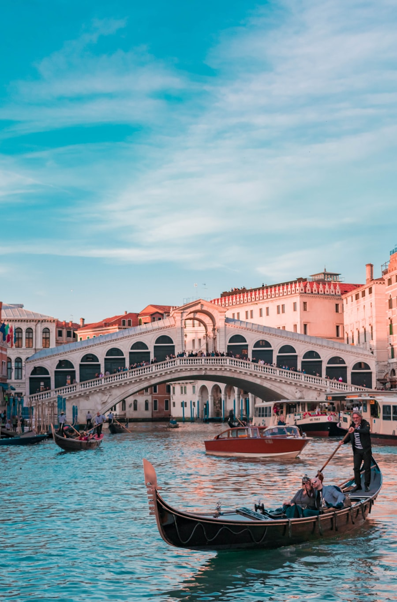

⏱ מהמלון ~20–30 דק׳ הליכה · או מונית 10–15 דק׳
טרסטוורה
שכונה ציורית מעבר לטיבר — סמטאות, כנסיות, ואוכל מקומי. רוב סיורי האוכל הערב־לילה מתרחשים כאן.
בערב תוססת — מתאים לסיור מונחה.
מדריך החופשה · רומא · Legend of the Seas · 14–25 בספטמבר 2026
רביעי · סיורים מומלצים מהרשת · אריזה לשייט

שכונה ציורית מעבר לטיבר — סמטאות, כנסיות, ואוכל מקומי. רוב סיורי האוכל הערב־לילה מתרחשים כאן.
בערב תוססת — מתאים לסיור מונחה.

שכונת אוכל ״אמיתית״ של רומאים — שוק מקורה, דוכנים, טרטוריות משפחתיות. פחות תיירותית מטרווי.
הרבה מנות בשריות מסורתיות — לבקש חלופות בלי חזיר.
| סיור | ציון לנו | למה |
|---|---|---|
| Eating Europe Trastevere / Family | 9 | ביקורות משפחתיות מצוינות, מותג ותיק |
| Eating Europe Private | 9 | שליטה מלאה בקצב ותזונה |
| Devour Testaccio | 8 | שוק אותנטי; לתאם תזונה |
| DIY | 6 | רק אם אין מקום בסיורים |
אחה״צ: פנתיאון/נבונה קצר + אריזה לשייט.
פירוט לכל היעדים: עמוד מוניות בטוחות
| אפשרות | מה כולל | עלות משוערת ליום (משפחה ×4) |
|---|---|---|
| A ★ | Eating Europe — Twilight Trastevere / Family food tour | €280–400 (סיור משפחתי — תלוי הנחות ילדים) |
| B | Devour Tours — Ultimate Testaccio Market Tour | €320–450 (סיור משפחתי) |
| C | Eating Europe — Private Testaccio (פרטי) | €500–700 (סיור פרטי למשפחה) |
| D | טיול אוכל עצמאי בטרסטוורה | €100–180 (אוכל + תחבורה קלה) |
| E | יום אאוטלט Castel Romano | €150–350 (העברה + קניות לפי בחירה) |
מחירים משוערים באירו ליום שלם למשפחה — לא כוללים טיסות/מלון/חבילת השייט עצמה, אלא מה שמשלמים באותו יום לפי האפשרות. לעדכון לפני הנסיעה.